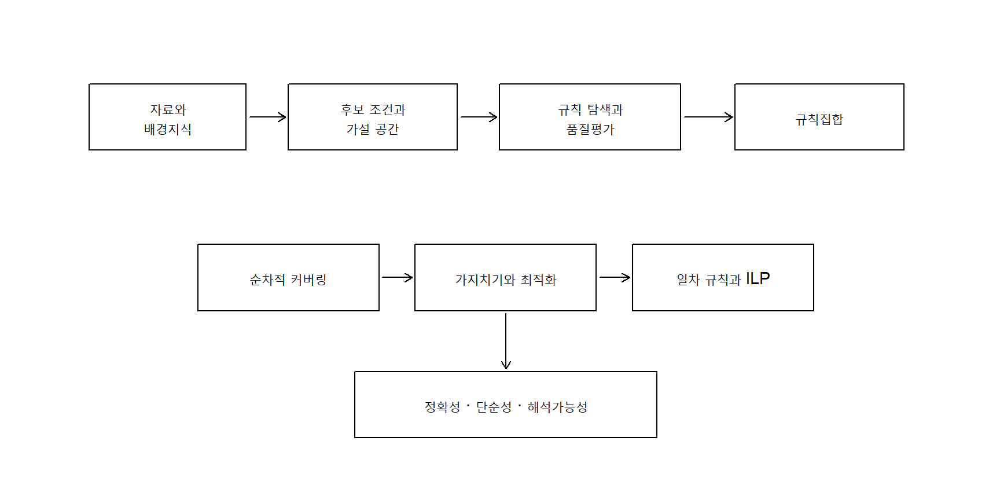
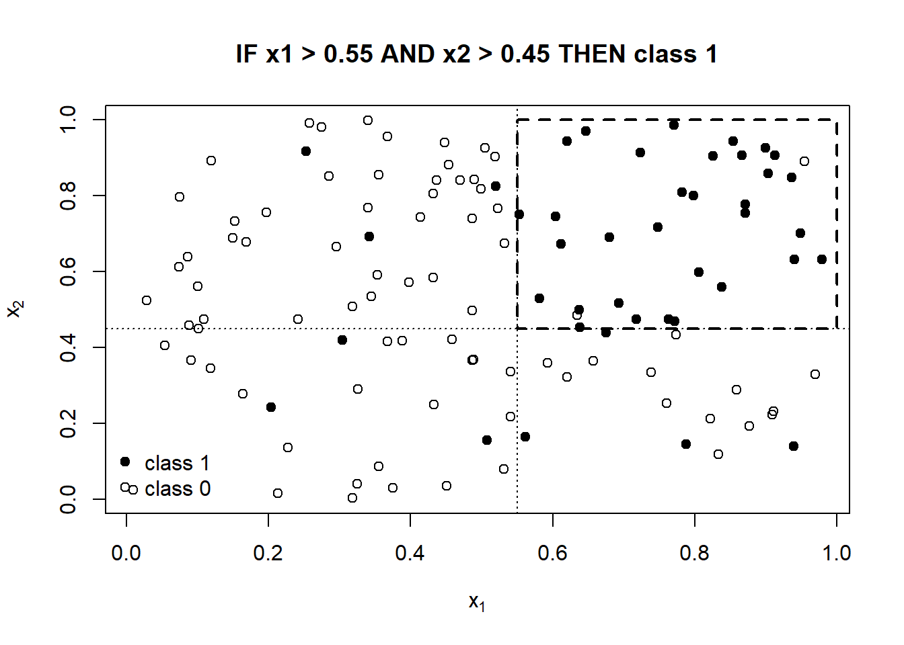
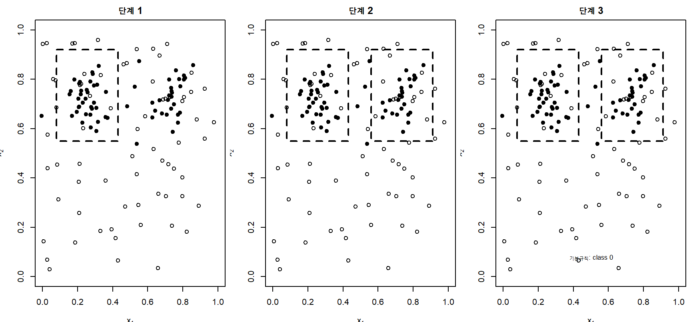
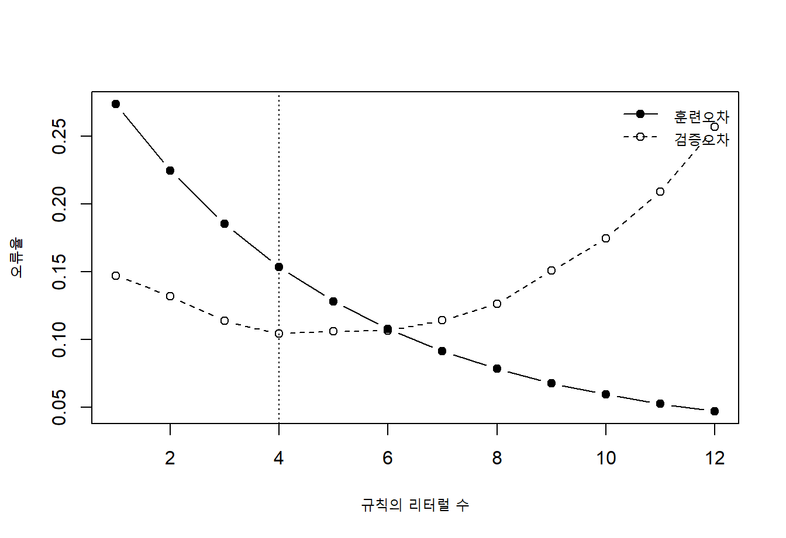
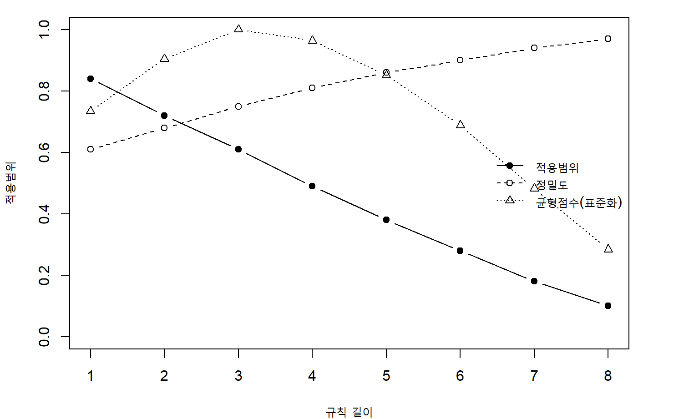
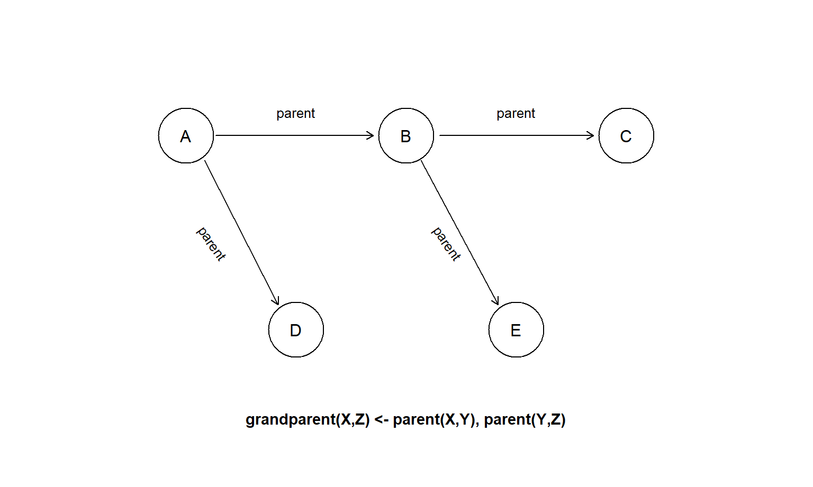
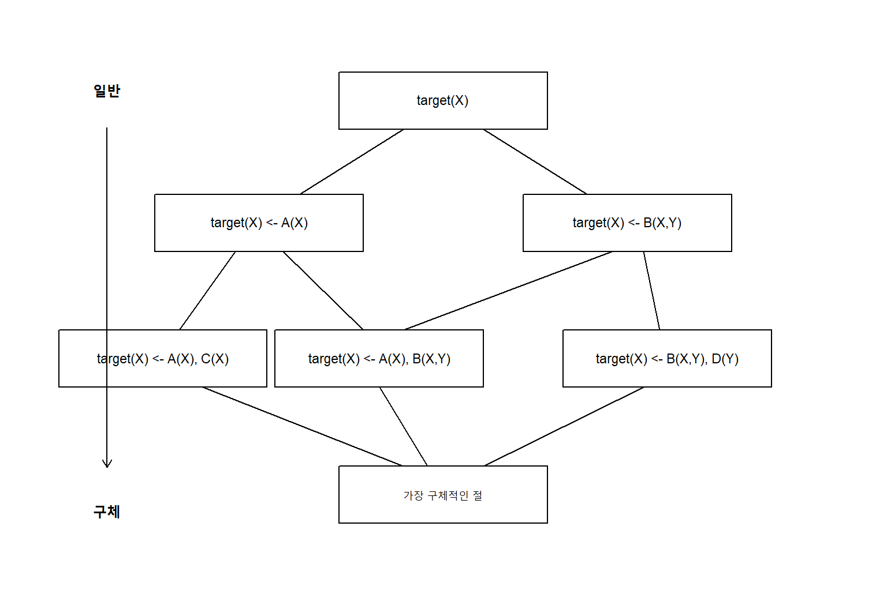

15 규칙 학습
머신러닝 모형은 정확한 예측뿐 아니라 사람이 이해할 수 있는 지식의 형태를 제공해야 하는 경우가 많다. 의료 의사결정, 신용평가, 품질관리, 법률과 공공정책처럼 판단의 근거를 설명해야 하는 영역에서는 복잡한 수치모형보다 IF–THEN 규칙이 직접적인 의사결정 언어가 될 수 있다. 규칙 학습(rule learning)은 자료로부터 조건과 결론으로 이루어진 명시적 규칙을 발견하는 방법을 다룬다.
가장 단순한 분류규칙은 다음과 같이 표현된다.
\[ \text{IF }A_1(\boldsymbol x)\land A_2(\boldsymbol x)\land\cdots\land A_m(\boldsymbol x) \text{ THEN }Y=c. \tag{15.1}\]
\(A_j(\boldsymbol x)\)는 변수의 값에 대한 조건인 리터럴(literal)이고, 여러 리터럴의 논리곱은 규칙의 전제부 또는 몸체(body)를 구성한다. \(Y=c\)는 규칙의 결론부 또는 머리(head)이다. 예를 들어
\[ \text{IF age}\geq 65 \land \text{blood pressure}>140 \text{ THEN high risk} \]
는 두 조건을 모두 만족하는 사람을 고위험군으로 분류한다.
규칙 학습은 의사결정 트리와 밀접하게 관련되지만 동일하지는 않다. 의사결정 트리는 하나의 관측값이 뿌리부터 말단노드까지 정확히 하나의 경로를 따라가도록 입력공간을 분할한다. 반면 규칙집합은 여러 규칙이 서로 겹칠 수 있고, 규칙의 순서가 있을 수도 없을 수도 있다. 따라서 규칙 학습에서는 다음 문제가 중요하다.
- 어떤 조건을 규칙에 포함할 것인가?
- 규칙의 품질을 어떻게 측정할 것인가?
- 여러 규칙이 충돌할 때 어떤 결론을 선택할 것인가?
- 복잡한 규칙을 어떻게 가지치기하고 단순화할 것인가?
- 개체 사이의 관계와 배경지식을 어떻게 규칙에 포함할 것인가?
이 장에서는 먼저 명제형 규칙의 표현과 평가기준을 정리한다. 이어 규칙을 하나씩 학습하는 순차적 커버링, 과적합을 줄이는 가지치기와 규칙집합 최적화, 변수와 관계를 포함하는 일차 규칙 학습, 마지막으로 배경지식(background knowledge)과 논리추론을 결합하는 귀납 논리 프로그래밍을 설명한다.
그림 15.1에서 규칙 학습은 단순히 높은 정확도를 갖는 조건을 찾는 과정이 아니다. 자료와 배경지식으로부터 후보 규칙을 생성하고, 규칙의 예측력과 복잡도를 함께 평가하며, 최종적으로 서로 충돌하지 않고 해석 가능한 규칙집합을 구성하는 과정이다.
15.1 기본 개념
15.1.1 규칙의 표현
명제형 규칙은 일반적으로 다음과 같이 표현한다.
\[ r: \quad A_1\land A_2\land\cdots\land A_m \Rightarrow Y=c. \tag{15.2}\]
각 \(A_j\)는 하나의 특성에 대한 조건이다. 연속형 변수에서는
\[ x_j\leq t, \qquad x_j>t \]
과 같은 임계값 조건을 사용하고, 범주형 변수에서는
\[ x_j\in S \]
와 같이 범주집합 \(S\)에 대한 소속조건을 사용한다. 이진형 변수는 \(x_j=1\) 또는 \(x_j=0\)으로 표현할 수 있다.
규칙은 다음 요소로 구성된다.
- 머리(head): 규칙이 예측하는 클래스 또는 값
- 몸체(body): 결론이 성립하기 위한 조건들의 결합
- 리터럴(literal): 몸체를 구성하는 개별 조건
- 길이(length): 규칙에 포함된 리터럴의 수
- 커버리지(coverage): 규칙의 몸체를 만족하는 관측값의 집합
자료집합을
\[ \mathcal D=\{(\boldsymbol x_i,y_i)\}_{i=1}^{n} \]
라고 할 때, 규칙 \(r\)의 커버리지 집합은
\[ C(r) = \left\{ i:A_1(\boldsymbol x_i)=\cdots=A_m(\boldsymbol x_i)=1 \right\} \tag{15.3}\]
로 정의한다. 규칙의 길이가 증가하면 일반적으로 커버리지는 감소하지만 순도는 높아질 수 있다. 규칙 학습은 이 두 특성 사이의 절충을 찾는 과정이다.

그림 15.2에서 두 조건의 논리곱은 축에 평행한 직사각형 영역을 정의한다. 이 영역 안의 관측값은 양성으로, 영역 밖의 관측값은 기본규칙에 따라 음성으로 분류할 수 있다.
15.1.2 규칙집합과 결정목록
여러 규칙을 결합하는 방식에 따라 규칙모형은 크게 결정목록(decision list)과 규칙집합(rule set)으로 나뉜다.
결정목록은 규칙에 순서가 있다.
\[ \begin{aligned} &r_1:\quad A_{11}\land\cdots\land A_{1m_1}\Rightarrow Y=c_1,\\ &r_2:\quad A_{21}\land\cdots\land A_{2m_2}\Rightarrow Y=c_2,\\ &\quad\vdots\\ &r_K:\quad A_{K1}\land\cdots\land A_{Km_K}\Rightarrow Y=c_K,\\ &r_0:\quad \text{otherwise}\Rightarrow Y=c_0. \end{aligned} \tag{15.4}\]
새로운 관측값은 위에서부터 규칙을 검사하여 처음 만족하는 규칙의 결론으로 분류된다. 따라서 서로 충돌하는 규칙이 있어도 앞에 있는 규칙이 우선한다.
규칙집합은 규칙의 순서가 없거나 약하다. 하나의 관측값이 여러 규칙을 동시에 만족할 수 있으므로 다음과 같은 결합전략이 필요하다.
- 가장 정확한 규칙의 결론을 선택한다.
- 가장 구체적인 규칙을 선택한다.
- 커버한 규칙의 가중투표를 사용한다.
- 규칙별 추정확률을 평균한다.
- 충돌 시 기본규칙 또는 별도 메타모형을 사용한다.
순서가 없는 규칙집합은 규칙을 독립적으로 해석하기 쉽지만 충돌해결이 필요하다. 결정목록은 예측절차가 명확하지만 앞선 규칙의 선택이 뒤 규칙의 의미에 영향을 준다.
15.1.3 규칙의 적용범위와 정확성
이진분류에서 양성 클래스를 \(Y=1\)이라고 하자. 규칙의 몸체를 만족하면 양성으로 예측한다고 할 때 다음 네 수를 정의한다.
- \(p\): 규칙이 커버한 양성 관측값 수
- \(n\): 규칙이 커버한 음성 관측값 수
- \(P\): 전체 양성 관측값 수
- \(N\): 전체 음성 관측값 수
규칙의 지원도(support)는 전체 자료 중 규칙이 커버한 비율이다.
\[ \operatorname{support}(r) = \frac{p+n}{P+N}. \tag{15.5}\]
규칙의 신뢰도 또는 정밀도는 규칙이 커버한 사례 중 양성의 비율이다.
\[ \operatorname{precision}(r) = \frac{p}{p+n}. \tag{15.6}\]
재현율은 전체 양성 중 규칙이 발견한 비율이다.
\[ \operatorname{recall}(r) = \frac{p}{P}. \tag{15.7}\]
특이도는 전체 음성 중 규칙이 제외한 비율이다.
\[ \operatorname{specificity}(r) = \frac{N-n}{N}. \tag{15.8}\]
규칙이 매우 적은 사례만 커버하면 정밀도가 우연히 높게 나타날 수 있다. 예를 들어 단 한 명의 양성만 커버하는 규칙은 표본 정밀도가 1이지만 일반화 가능성은 낮다. 따라서 규칙평가에서는 적용범위와 정확성을 함께 고려해야 한다.
15.1.4 평활화된 규칙 정확도
작은 커버리지에서 발생하는 불안정을 줄이기 위해 라플라스 추정치를 사용할 수 있다. 클래스가 \(K\)개이고 규칙이 예측하는 클래스의 사례가 \(p\)개라면
\[ \operatorname{Laplace}(r) = \frac{p+1}{p+n+K}. \tag{15.9}\]
이진분류에서는
\[ \operatorname{Laplace}(r) = \frac{p+1}{p+n+2} \]
가 된다. \(m\)-추정치는 전체 양성비율 \(\pi=P/(P+N)\)를 사전정보처럼 사용한다.
\[ \operatorname{mEst}(r) = \frac{p+m\pi}{p+n+m}. \tag{15.10}\]
\(m\)이 작으면 규칙의 관측정밀도에 가깝고, \(m\)이 크면 전체 양성비율에 가까워진다. 이는 작은 규칙의 정밀도를 모집단의 기본비율 쪽으로 수축시키는 효과를 갖는다.
15.1.5 가중 상대정확도
규칙의 커버리지와 기본비율 대비 개선을 동시에 반영하는 대표적 기준이 가중 상대정확도(weighted relative accuracy, WRAcc)이다.
\[ \operatorname{WRAcc}(r) = \frac{p+n}{P+N} \left( \frac{p}{p+n}-\frac{P}{P+N} \right). \tag{15.11}\]
첫 번째 항은 규칙의 적용범위이고, 두 번째 항은 규칙의 양성비율이 전체 양성비율보다 얼마나 높은지를 나타낸다. 규칙이 많은 사례를 커버하면서도 기본비율보다 높은 양성비율을 가질 때 WRAcc가 커진다.
15.1.6 정보이론적 기준
규칙 전후의 클래스 불확실성 감소를 이용할 수도 있다. 이진 엔트로피를
\[ H(q) = -q\log_2q-(1-q)\log_2(1-q) \]
라고 하자. 규칙이 전체 자료를 커버집합 \(C(r)\)와 비커버집합 \(C(r)^c\)로 나눌 때 정보이득은
\[ \operatorname{IG}(r) = H\left(\frac{P}{P+N}\right) - \frac{|C(r)|}{P+N}H\left(\frac{p}{p+n}\right) - \frac{|C(r)^c|}{P+N}H(q_{C^c}) \tag{15.12}\]
로 나타낼 수 있다. 정보이득은 규칙이 자료의 클래스 불확실성을 얼마나 감소시키는지 측정한다.
15.1.7 규칙의 복잡도
예측력이 비슷한 두 규칙이 있다면 더 짧고 단순한 규칙을 선호하는 것이 일반적이다. 규칙집합 \(R=\{r_1,\ldots,r_K\}\)의 단순한 복잡도는
\[ \Omega(R) = \alpha K + \beta\sum_{k=1}^{K}\operatorname{length}(r_k) \tag{15.13}\]
로 표현할 수 있다. \(K\)는 규칙 수이고, 두 번째 항은 전체 리터럴 수이다. 해석가능성은 규칙 길이만으로 완전히 측정되지는 않지만, 규칙 수와 조건 수는 가장 기본적인 복잡도 지표이다.
규칙 학습을 규제된 경험위험 최소화로 표현하면
\[ \widehat R = \arg\min_{R\in\mathcal R} \left[ \widehat L(R) + \lambda\Omega(R) \right] \tag{15.14}\]
가 된다. \(\widehat L(R)\)은 훈련오차 또는 로그손실이고, \(\Omega(R)\)은 규칙집합의 복잡도이다.
15.1.8 규칙과 의사결정 트리의 관계
의사결정 트리의 각 뿌리-말단 경로는 하나의 규칙으로 변환할 수 있다. 예를 들어
\[ x_1>t_1 \rightarrow x_2\leq t_2 \rightarrow Y=1 \]
이라는 경로는
\[ (x_1>t_1)\land(x_2\leq t_2)\Rightarrow Y=1 \]
이라는 규칙이다. 그러나 트리에서 추출한 규칙은 다음 한계를 갖는다.
- 서로 다른 규칙이 초기 분할조건을 반복해서 포함한다.
- 하나의 분할을 수정하면 여러 규칙이 동시에 바뀐다.
- 트리 구조상 입력공간 전체를 상호배타적으로 분할해야 한다.
- 규칙별로 독립적인 가지치기가 어렵다.
규칙 학습은 규칙을 직접 탐색하거나 트리에서 추출한 후 개별적으로 단순화함으로써 이러한 한계를 줄일 수 있다.
15.1.9 회귀규칙
규칙 학습은 분류뿐 아니라 회귀에도 사용할 수 있다. 회귀규칙은 조건을 만족하는 관측값에 상수 또는 국소모형을 할당한다.
\[ r_k: \quad A_{k1}\land\cdots\land A_{km_k} \Rightarrow \widehat y=\mu_k. \tag{15.15}\]
더 일반적으로 결론부에 선형모형을 둘 수 있다.
\[ r_k: \quad A_{k1}\land\cdots\land A_{km_k} \Rightarrow \widehat y = \beta_{k0}+\boldsymbol x^\top\boldsymbol\beta_k. \tag{15.16}\]
이와 같은 모형은 입력공간의 서로 다른 영역에서 서로 다른 회귀관계를 허용한다. 규칙이 겹치는 경우에는 여러 규칙의 예측을 가중평균하거나 순서를 정하여 첫 번째 적용규칙을 사용할 수 있다.
15.2 순차적 커버링
15.2.1 분리하여 정복하기
순차적 커버링(sequential covering)은 양성 사례를 잘 설명하는 규칙을 하나씩 학습하고, 이미 설명된 양성 사례를 제거한 뒤 같은 과정을 반복하는 방법이다. 의사결정 트리가 자료공간을 재귀적으로 분할하는 divide-and-conquer 방법이라면, 순차적 커버링은 하나의 규칙이 특정 부분집합을 분리한 뒤 나머지 자료에서 다음 규칙을 찾는 separate-and-conquer 방법이다.
기본 절차는 다음과 같다.
입력: 훈련자료 D, 목표 클래스 c
출력: 목표 클래스 c를 예측하는 규칙집합 R
R <- 빈 집합
D_remain <- D
while D_remain에 충분한 양성 사례가 남아 있는 동안:
r <- 가장 일반적인 빈 규칙으로 시작
while r이 너무 많은 음성 사례를 커버하는 동안:
후보 리터럴을 생성
품질이 가장 크게 개선되는 리터럴을 r에 추가
r을 가지치기
R에 r을 추가
D_remain에서 r이 커버한 양성 사례를 제거
기본규칙을 추가
return R한 규칙을 성장시키는 내부 반복에서는 조건을 하나씩 추가한다. 조건이 추가될수록 규칙은 더 구체적이 되고 커버리지는 감소한다.

그림 15.3에서 첫 번째 규칙은 왼쪽 위의 양성군을, 두 번째 규칙은 오른쪽 위의 양성군을 커버한다. 남은 사례에는 기본규칙이 적용된다.
15.2.2 빈 규칙에서 시작하기
목표 클래스가 \(c\)일 때 가장 일반적인 초기규칙은 조건이 없는 규칙이다.
\[ \text{TRUE}\Rightarrow Y=c. \]
이 규칙은 모든 관측값을 커버한다. 규칙 성장과정에서는 리터럴을 하나씩 추가하여 음성 커버리지를 줄인다. 현재 규칙을 \(r\)이라 하고 후보 리터럴을 \(L\)이라 하면 새 규칙은
\[ r'=r\land L \]
이다. 후보 리터럴의 품질은 \(r'\)가 \(r\)보다 양성 사례의 비율을 얼마나 증가시키는지 평가한다.
15.2.3 후보 리터럴 생성
연속형 변수 \(x_j\)에서는 관측된 값 사이의 중간점을 후보 임계값으로 사용할 수 있다.
\[ t\in \left\{ \frac{x_{(1)j}+x_{(2)j}}{2}, \ldots, \frac{x_{(n-1)j}+x_{(n)j}}{2} \right\}. \tag{15.17}\]
각 임계값에 대해 \(x_j\leq t\)와 \(x_j>t\)를 후보로 평가한다. 계산량을 줄이기 위해 클래스가 바뀌는 인접값 사이의 임계값만 고려할 수 있다.
명목형 변수의 범주가 \(G\)개이면 가능한 부분집합 분할은 \(2^{G-1}-1\)개이다. 범주 수가 많을 때는 다음 근사를 사용한다.
- 목표 클래스 비율에 따라 범주를 정렬한 뒤 연속형처럼 분할한다.
- 각 범주 대 나머지의 조건만 평가한다.
- 빈도가 작은 범주를 묶는다.
- 범주 임베딩이나 사전 군집화를 사용한다.
결측값은 별도 범주로 취급하거나, 결측 여부 자체를 리터럴로 사용할 수 있다.
\[ I(x_j\text{ is missing})=1. \]
그러나 결측 리터럴이 실제 자료수집 과정의 차이를 학습하는지, 임상적 또는 과학적 의미를 갖는지는 별도로 검토해야 한다.
15.2.4 탐욕적 특수화
후보 리터럴 집합을 \(\mathcal L(r)\)이라고 하면 탐욕적 규칙 성장에서는
\[ L^\ast = \arg\max_{L\in\mathcal L(r)} Q(r\land L) \tag{15.18}\]
를 선택한다. \(Q\)는 정보이득, WRAcc, 라플라스 정확도(Laplace accuracy) 또는 비용민감 점수일 수 있다. 탐욕적 선택은 계산이 빠르지만, 초기의 국소적으로 좋은 조건이 이후 더 좋은 규칙을 막을 수 있다.
15.2.5 FOIL 정보이득
FOIL에서는 리터럴 추가 전의 양성·음성 수를 \((p_0,n_0)\), 추가 후를 \((p_1,n_1)\)이라고 한다. 새 규칙에서 살아남은 양성 바인딩의 수를 \(t\)라고 할 때 FOIL 정보이득은
\[ \operatorname{FOILGain}(L) = t \left[ \log_2\frac{p_1}{p_1+n_1} - \log_2\frac{p_0}{p_0+n_0} \right]. \tag{15.19}\]
첫 번째 로그항 차이는 양성비율의 향상을, \(t\)는 새 조건이 유지한 양성사례의 양을 반영한다. 따라서 매우 순수하지만 극소수만 커버하는 리터럴이 과도하게 선호되는 것을 줄인다.
15.2.6 빔 탐색
탐욕적 탐색은 각 단계에서 하나의 규칙만 유지한다. 빔 탐색(beam search)은 품질이 높은 상위 \(B\)개의 부분규칙을 유지한다.
\[ \mathcal B_{d+1} = \operatorname{TopB} \left\{ r\land L: r\in\mathcal B_d, L\in\mathcal L(r) \right\}. \tag{15.20}\]
빔 폭 \(B=1\)이면 탐욕적 탐색과 같고, \(B\)가 커지면 더 넓은 가설공간을 탐색하지만 계산량과 중복규칙이 증가한다. 동일한 커버리지 또는 논리적으로 동등한 규칙은 제거하여 탐색효율을 높일 수 있다.
15.2.7 정지조건
규칙 성장을 너무 오래 지속하면 훈련자료의 잡음까지 설명하는 긴 규칙이 만들어진다. 대표적인 정지조건은 다음과 같다.
- 음성 커버리지가 0 또는 허용수준 이하가 됨
- 리터럴 추가에 따른 품질 향상이 임계값보다 작음
- 최소 커버리지보다 적은 사례만 남음
- 최대 규칙 길이에 도달함
- 검증자료의 성능이 더 이상 개선되지 않음
- 통계적 유의성 또는 최소설명길이 기준을 만족하지 못함
성장단계에서 강한 정지를 사용하면 중요한 조건을 충분히 탐색하지 못할 수 있다. 실무에서는 비교적 큰 규칙을 먼저 성장시킨 뒤 별도의 가지치기를 수행하는 방식이 자주 사용된다.
15.2.8 커버된 사례의 제거와 재가중
표준 순차적 커버링은 새 규칙이 커버한 양성 사례를 제거한다.
\[ \mathcal D_{k+1}^{+} = \mathcal D_k^{+}\setminus C^{+}(r_k). \tag{15.21}\]
음성 사례는 다음 규칙의 오류를 평가하기 위해 남겨둔다. 그러나 양성 사례를 완전히 제거하면 여러 개념이 겹치는 영역이나 다중레이블 문제를 표현하기 어렵다. 대안은 다음과 같다.
- 커버된 양성의 가중치를 감소시킨다.
- 모든 사례를 유지하되 이미 커버된 정도를 목적함수에 반영한다.
- 규칙집합 전체를 공동으로 최적화한다.
- 클래스별로 독립적인 규칙집합을 학습한다.
가중치를 사용하는 경우 \(i\)번째 사례의 현재 가중치를 \(w_i^{(k)}\)라고 하고
\[ w_i^{(k+1)} = \begin{cases} \gamma w_i^{(k)}, & i\in C^+(r_k),\\ w_i^{(k)}, & \text{otherwise}, \end{cases} \qquad 0\leq\gamma<1 \tag{15.22}\]
처럼 갱신할 수 있다.
15.2.9 다중분류 순차적 커버링
다중분류에서는 각 클래스를 차례로 목표 클래스로 설정하여 규칙을 학습할 수 있다. 클래스 순서는 결과에 영향을 준다. 일반적인 전략은 다음과 같다.
- 빈도가 작은 클래스부터 학습한다.
- 오분류 비용이 큰 클래스부터 학습한다.
- 각 클래스의 규칙을 독립적으로 학습한 뒤 충돌을 해결한다.
- 한 번의 탐색에서 여러 클래스 결론을 후보로 평가한다.
희귀 클래스를 마지막에 학습하면 앞선 다수 클래스 규칙이 희귀 사례를 이미 흡수할 수 있다. 따라서 불균형 자료에서는 클래스 순서와 최소 커버리지를 주의 깊게 설정해야 한다.
15.2.10 CN2 알고리즘
CN2는 빔 탐색으로 규칙을 발견하고 순차적 커버링으로 규칙목록을 구성하는 대표적인 알고리즘이다. 규칙 품질에는 엔트로피 또는 라플라스 정확도를 사용하며, 우연히 좋은 규칙이 선택되는 것을 줄이기 위해 통계적 유의성 검정을 결합할 수 있다.
CN2의 특징은 다음과 같다.
- 여러 부분규칙을 동시에 유지하는 빔 탐색
- 범주형·연속형 조건의 탐색
- 순서 있는 규칙목록 또는 순서 없는 규칙집합 생성
- 작은 커버리지에 대한 라플라스 보정
- 유의성 기준을 이용한 탐색 제한
15.2.11 AQ 계열 방법
AQ 계열은 특정 양성 사례를 포함하면서 선택된 음성 사례를 제외하는 규칙을 생성하는 별-방법(star method)을 사용한다. 하나의 양성 종자사례에서 출발하여 음성 사례를 배제하는 조건을 추가하고, 생성된 후보 중 가장 좋은 규칙을 선택한다.
AQ는 규칙을 양성 사례 중심으로 구성한다는 점에서 순차적 커버링과 유사하지만, 후보규칙 집합을 명시적으로 유지하고 일반화·특수화 연산을 반복한다는 특징이 있다.
15.3 가지치기 최적화
15.3.1 규칙 과적합
규칙에 조건을 추가하면 훈련자료에서 음성 커버리지를 계속 줄일 수 있다. 극단적으로 각 양성 사례를 고유하게 식별하는 규칙을 만들면 훈련오차는 0에 가까워진다. 그러나 이러한 규칙은 새로운 자료에서 재현되지 않을 가능성이 높다.
규칙 길이 \(d\)에 따른 일반적인 오차패턴은
\[ \widehat R_{\text{train}}(d) \downarrow, \qquad \widehat R_{\text{validation}}(d) \text{는 감소 후 증가} \]
로 나타난다.

그림 15.4는 규칙을 지나치게 성장시키면 훈련오차는 감소하지만 검증오차가 증가할 수 있음을 보여준다. 가지치기는 불필요한 리터럴을 제거하여 일반화 성능과 해석가능성을 함께 개선한다.
15.3.2 축소오차 가지치기
자료를 성장집합 \(\mathcal D_g\)와 가지치기집합 \(\mathcal D_p\)로 나눈다. 성장집합에서 큰 규칙을 만든 뒤, 각 리터럴을 제거했을 때 가지치기집합의 성능이 나빠지지 않으면 제거한다.
규칙
\[ r=A_1\land\cdots\land A_m\Rightarrow Y=c \]
에서 \(A_j\)를 제거한 후보를 \(r_{-j}\)라고 하자. 다음 조건을 만족하면 제거할 수 있다.
\[ Q_{\mathcal D_p}(r_{-j}) \geq Q_{\mathcal D_p}(r). \tag{15.23}\]
한 번에 하나의 리터럴을 제거하는 후진 탐색을 반복한다. 별도 가지치기자료를 사용하면 훈련자료 재사용에 따른 낙관적 편향을 줄일 수 있지만, 작은 표본에서는 성장에 사용할 자료가 줄어든다.
15.3.3 비관적 오류 추정
별도 검증자료 없이 훈련오류를 보정하여 가지치기할 수 있다. 규칙이 \(e\)개의 오류를 내고 \(m\)개의 사례를 커버한다고 하자. 단순한 비관적 추정은
\[ \widehat e_{\text{pess}} = \frac{e+\delta}{m} \tag{15.24}\]
로 쓸 수 있다. \(\delta>0\)는 작은 규칙의 낙관성을 보정하는 항이다. 보다 정교하게는 이항비율의 상한 신뢰한계를 사용할 수 있다. 규칙을 단순화했을 때 보정오류가 감소하면 가지치기한다.
15.3.4 최소설명길이 원리
최소설명길이(minimum description length, MDL) 원리는 규칙집합과 규칙이 설명하지 못한 오류를 함께 부호화하는 총 길이를 최소화한다.
\[ R^\ast = \arg\min_R \left\{ L(R)+L(\mathcal D\mid R) \right\}. \tag{15.25}\]
\(L(R)\)은 규칙 수, 조건, 변수와 임계값을 표현하는 데 필요한 길이이고, \(L(\mathcal D\mid R)\)은 규칙집합이 틀린 사례를 표현하는 길이이다. 복잡한 규칙은 첫 번째 항을 증가시키고, 지나치게 단순한 규칙은 두 번째 항을 증가시킨다.
MDL은 규제와 동일한 철학을 갖는다.
\[ \text{자료 적합도} + \lambda\times\text{모형 복잡도}. \]
15.3.5 RIPPER의 성장과 가지치기
RIPPER는 효율적인 순차적 규칙 학습의 대표적 알고리즘이다. 이진문제에서 일반적으로 소수 클래스를 양성으로 설정한다. 자료를 성장부분과 가지치기부분으로 나눈 뒤 다음 과정을 반복한다.
- 성장자료에서 FOIL 이득이 가장 큰 리터럴을 추가한다.
- 규칙이 음성을 거의 커버하지 않을 때까지 성장시킨다.
- 가지치기자료에서 뒤쪽 리터럴을 제거하며 규칙을 단순화한다.
- 규칙을 추가하고 커버된 양성을 제거한다.
- MDL 기준이 악화되면 규칙 추가를 중지한다.
RIPPER의 가지치기 기준은 규칙이 커버한 가지치기 사례에서의 양성과 음성 수를 이용한다. 단순한 형태는
\[ v(r) = \frac{p-n}{p+n} \tag{15.26}\]
이다. \(v(r)\)가 가장 큰 접두 규칙을 선택한다. 이는 정밀도와 오류를 동시에 반영한다.
15.3.6 규칙집합 최적화
개별 규칙이 적절해도 규칙집합 전체가 최적이라는 보장은 없다. 순차적 커버링은 앞선 규칙이 이후 탐색자료를 바꾸기 때문에 규칙 순서에 민감하다. RIPPER는 초기 규칙집합을 만든 뒤 각 규칙에 대해 두 대안을 생성한다.
- 대체 규칙: 현재 규칙이 없다고 가정하고 처음부터 다시 성장
- 수정 규칙: 현재 규칙에 조건을 추가하여 개선
원래 규칙, 대체 규칙과 수정 규칙 중 전체 설명길이가 가장 작은 것을 선택한다. 이 과정을 여러 번 반복하여 규칙집합을 최적화한다.
15.3.7 전역 규칙집합 최적화
순차적 방법과 달리 모든 규칙을 동시에 선택하는 문제로 표현할 수 있다. 후보규칙 \(r_1,\ldots,r_M\)이 있고 \(z_j\in\{0,1\}\)가 규칙 선택 여부라고 하자.
\[ \min_{\boldsymbol z} \widehat L(\boldsymbol z) + \lambda_1\sum_{j=1}^{M}z_j + \lambda_2\sum_{j=1}^{M}z_j\operatorname{length}(r_j). \tag{15.27}\]
오분류 여부와 규칙활성화를 선형 제약으로 표현하면 혼합정수계획으로 풀 수 있다. 전역 최적화는 규칙 간 중복과 충돌을 직접 제어할 수 있지만, 후보규칙 수가 매우 크면 계산이 어렵다.
대표적인 전역 목적은 다음을 포함할 수 있다.
- 오분류 최소화
- 규칙 수와 전체 리터럴 수 최소화
- 한 사례를 커버하는 규칙 수 제한
- 민감도 또는 특이도 하한
- 클래스별 공정성 제약
- 단조성 또는 영역지식 제약
15.3.8 중복과 포괄관계 제거
두 규칙 \(r_a\)와 \(r_b\)가 같은 클래스를 예측하고
\[ C(r_a)\subseteq C(r_b) \]
이며 \(r_b\)의 오류가 더 작거나 같다면 \(r_a\)는 불필요할 수 있다. 또한 두 규칙이 동일한 커버리지와 결론을 갖는다면 더 짧은 규칙을 유지한다.
규칙 간 유사도는 Jaccard 계수로 측정할 수 있다.
\[ J(r_a,r_b) = \frac{|C(r_a)\cap C(r_b)|} {|C(r_a)\cup C(r_b)|}. \tag{15.28}\]
\(J\)가 매우 큰 규칙들은 하나로 병합하거나 대표규칙만 남길 수 있다.
15.3.9 예외 규칙
일반규칙에 소수의 체계적 예외가 존재할 수 있다. 예외를 별도 규칙으로 표현하면 결정목록은 다음 구조를 갖는다.
\[ \begin{aligned} &\text{IF exceptional condition THEN }Y=0,\\ &\text{ELSE IF general condition THEN }Y=1,\\ &\text{ELSE }Y=0. \end{aligned} \]
예외규칙은 해석에 유용하지만, 너무 많은 예외를 허용하면 개별 사례를 암기하는 모형이 된다. 최소 커버리지, MDL과 별도 검증을 이용해 예외의 필요성을 평가해야 한다.
15.3.10 확률적 규칙과 보정
규칙은 클래스만 출력하는 대신 조건부확률을 제공할 수 있다.
\[ \widehat P(Y=c\mid r) = \frac{p_c+\alpha_c} {m+\sum_{k=1}^{K}\alpha_k}. \tag{15.29}\]
여러 규칙이 한 관측값을 커버하면 규칙별 로그오즈를 결합할 수 있다.
\[ \operatorname{logit}\widehat P(Y=1\mid\boldsymbol x) = \beta_0+ \sum_{k=1}^{K} \beta_k I\{\boldsymbol x\in C(r_k)\}. \tag{15.30}\]
이 식은 규칙을 이진 특성으로 변환한 로지스틱 회귀이다. 규칙의 해석가능성을 유지하면서 규칙별 가중치와 확률보정을 학습할 수 있다.
15.3.11 규칙 안정성
규칙은 표본의 작은 변화에 민감할 수 있다. 부트스트랩 또는 반복 교차검증에서 규칙의 선택빈도를 계산한다.
\[ \widehat\pi(r) = \frac{1}{B} \sum_{b=1}^{B} I\{r\in R^{(b)}\}. \tag{15.31}\]
완전히 같은 임계값을 갖는 규칙이 반복되지 않을 수 있으므로 다음 수준에서 안정성을 평가할 수 있다.
- 변수의 선택빈도
- 조건 방향의 일치도
- 임계값의 분포
- 규칙 커버리지의 Jaccard 유사도
- 개별 사례의 예측 일치도
높은 예측성능과 높은 규칙 안정성은 동일하지 않다. 상관된 변수들이 서로 대체되면 예측은 안정적이지만 선택된 규칙은 달라질 수 있다.

그림 15.5에서 규칙이 길어질수록 정밀도는 높아질 수 있지만 적용범위는 감소한다. 최적 규칙은 어느 한 지표를 극대화하기보다 두 특성과 복잡도를 함께 고려하여 선택해야 한다.
15.4 일차 규칙 학습
15.4.1 명제형 표현의 한계
명제형 규칙은 하나의 관측값을 고정된 특성벡터로 표현한다. 그러나 많은 문제에서는 개체 사이의 관계가 중요하다.
- 사람 \(A\)가 사람 \(B\)의 부모이다.
- 약물 \(D\)가 단백질 \(P\)와 결합한다.
- 논문 \(A\)가 논문 \(B\)를 인용한다.
- 환자 \(i\)가 시간 \(t\)에 치료 \(z\)를 받았다.
- 도시 \(A\)와 도시 \(B\)가 도로로 연결되어 있다.
이러한 관계를 모두 고정된 열로 변환하면 변수 수가 급격히 증가하고, 개체 수가 달라지는 구조를 자연스럽게 표현하기 어렵다. 일차 논리(first-order logic)는 개체, 변수, 관계와 함수를 직접 표현한다.
15.4.2 항, 술어와 원자식
일차 논리의 기본 구성요소는 다음과 같다.
- 상수: 특정 개체를 나타냄. 예:
alice,drugA - 변수: 임의의 개체를 나타냄. 예: \(X\), \(Y\)
- 함수기호: 개체로부터 새로운 항을 생성
- 술어(predicate): 개체의 속성 또는 개체 사이의 관계를 표현
\(k\)항 술어는
\[ P(t_1,\ldots,t_k) \]
로 나타낸다. 이처럼 술어에 항을 적용하여 참이나 거짓을 판단할 수 있게 만든 식을 원자식(atom)이라고 한다. 예를 들어
\[ \operatorname{parent}(alice,bob) \]
은 alice가 bob의 부모라는 사실을 나타낸다.

그림 15.6의 규칙은 특정 사람의 이름을 나열하지 않고, 두 번의 부모관계가 연결되면 조부모관계가 성립한다는 일반구조를 표현한다.
15.4.3 절과 Horn 규칙
일차 규칙은 일반적으로 Horn 절로 표현한다.
\[ H \leftarrow B_1,\ldots,B_m. \tag{15.32}\]
이는
\[ B_1\land\cdots\land B_m \Rightarrow H \]
와 같다. 예를 들어
\[ \operatorname{grandparent}(X,Z) \leftarrow \operatorname{parent}(X,Y), \operatorname{parent}(Y,Z) \tag{15.33}\]
는 \(X\)가 \(Y\)의 부모이고 \(Y\)가 \(Z\)의 부모이면 \(X\)가 \(Z\)의 조부모라는 뜻이다.
Horn 절은 머리에 하나의 양의 리터럴만 갖기 때문에 추론이 비교적 효율적이다. 많은 규칙 학습과 논리 프로그래밍 시스템은 Horn 절을 기본 가설언어로 사용한다.
15.4.4 치환과 대입
치환(substitution) \(\theta\)는 변수를 항으로 대응시킨다.
\[ \theta = \{X/alice,\;Y/bob\}. \]
원자식 \(A\)에 치환을 적용한 결과를 \(A\theta\)로 쓴다. 예를 들어
\[ \operatorname{parent}(X,Y)\theta = \operatorname{parent}(alice,bob). \]
치환은 일반규칙을 구체적인 사실에 적용하는 핵심 연산이다.
15.4.5 단일화(unification)
두 원자식을 동일하게 만드는 치환이 존재하면 두 원자식은 단일화 가능하다고 한다. 예를 들어
\[ \operatorname{parent}(X,bob) \]
과
\[ \operatorname{parent}(alice,Y) \]
는
\[ \theta=\{X/alice,\;Y/bob\} \]
로 단일화된다. 가장 일반적인 단일화자를 최대일반단일화자(most general unifier)라고 한다. 논리규칙의 적용, 추론과 규칙탐색은 단일화에 의존한다.
15.4.6 포괄관계와 세타-포괄
규칙 \(C_1\)이 규칙 \(C_2\)보다 일반적인지를 비교하기 위해 \(\theta\)-포괄(\(\theta\)-subsumption)을 사용한다. 어떤 치환 \(\theta\)가 존재하여
\[ C_1\theta\subseteq C_2 \]
이면 \(C_1\)이 \(C_2\)를 \(\theta\)-포괄한다고 한다.
예를 들어
\[ \operatorname{related}(X,Y) \leftarrow \operatorname{parent}(X,Y) \]
는
\[ \operatorname{related}(alice,bob) \leftarrow \operatorname{parent}(alice,bob), \operatorname{female}(alice) \]
보다 일반적이다. 포괄관계는 규칙 가설공간에서 일반화와 특수화의 방향을 정의한다.
15.4.7 최소일반일치
두 표현을 모두 포괄하는 가장 구체적인 일반화를 최소일반일치(least general generalization, LGG)라고 한다. 예를 들어
\[ \operatorname{parent}(alice,bob) \]
과
\[ \operatorname{parent}(carol,dave) \]
의 LGG는
\[ \operatorname{parent}(X,Y) \]
이다. 관계형 규칙 학습에서는 여러 양성 예제의 공통구조를 일반화하여 후보규칙을 만들 수 있다.
15.4.8 일차 가설공간
일차 규칙은 새로운 변수, 술어와 리터럴을 추가할 수 있으므로 가설공간이 매우 크거나 무한할 수 있다. 탐색을 가능하게 하려면 언어 편향(language bias)을 사용한다.
대표적인 제약은 다음과 같다.
- 사용할 수 있는 술어의 집합 제한
- 규칙 머리의 술어 고정
- 규칙 길이의 상한
- 새 변수의 개수 제한
- 변수의 자료형 지정
- 재귀 허용 여부
- 함수기호의 사용 제한
- 술어 인자의 입력·출력 역할 지정
언어 편향은 계산량을 줄이는 동시에 학습할 수 있는 규칙의 형태를 결정한다. 잘못된 언어 편향은 참 규칙을 가설공간에서 제외할 수 있다.
15.4.9 모드 선언
모드 선언(mode declaration)은 술어가 규칙에서 어떻게 사용될 수 있는지를 지정한다. 개념적으로 다음 세 기호를 사용한다.
+type: 이미 값이 정해진 입력변수-type: 새로 생성할 수 있는 출력변수#type: 상수
예를 들어
modeh(1, target(+person)).
modeb(*, parent(+person, -person)).
modeb(*, age(+person, #number)).는 목표술어가 사람을 입력으로 받고, 몸체에서는 알려진 사람의 부모를 새 변수로 도입하거나 사람의 나이를 상수와 비교할 수 있음을 뜻한다.
15.4.10 FOIL 알고리즘
FOIL은 일차 Horn 규칙을 순차적 커버링으로 학습한다. 목표술어의 양성·음성 바인딩에서 출발하여 몸체 리터럴을 하나씩 추가한다. 각 단계에서 방정식 15.19의 정보이득이 가장 큰 리터럴을 선택한다.
FOIL의 기본과정은 다음과 같다.
- 아직 커버되지 않은 양성 예제가 있으면 빈 규칙을 시작한다.
- 현재 규칙이 음성 예제를 커버하면 후보 일차 리터럴을 생성한다.
- FOIL 이득이 가장 큰 리터럴을 추가한다.
- 음성 예제가 제거되면 규칙을 규칙집합에 추가한다.
- 커버된 양성 예제를 제거하고 반복한다.
FOIL은 명제형 순차적 커버링을 관계형 자료로 확장한 방법으로 볼 수 있다.
15.4.11 재귀 규칙
일차 규칙은 자기 자신을 참조하는 재귀를 표현할 수 있다. 예를 들어 조상관계는
\[ \operatorname{ancestor}(X,Y) \leftarrow \operatorname{parent}(X,Y) \]
과
\[ \operatorname{ancestor}(X,Y) \leftarrow \operatorname{parent}(X,Z), \operatorname{ancestor}(Z,Y) \tag{15.34}\]
의 두 규칙으로 정의할 수 있다. 재귀는 그래프의 경로, 목록, 계층과 시간적 반복구조를 간결하게 표현하지만 탐색공간과 추론복잡도를 크게 증가시킨다.
15.5 귀납 논리 프로그래밍
15.5.1 기본 학습문제
귀납 논리 프로그래밍(inductive logic programming, ILP)은 논리 프로그래밍의 표현력과 머신러닝의 귀납적 학습을 결합한다. ILP의 입력은 일반적으로 다음 세 부분으로 구성된다.
- 배경지식 \(B\)
- 양성 예제 \(E^+\)
- 음성 예제 \(E^-\)
목표는 가설 \(H\)를 찾아 다음 조건을 만족하는 것이다.
\[ B\cup H\models E^+ \tag{15.35}\]
\[ B\cup H\not\models E^-. \tag{15.36}\]
첫 번째 조건은 배경지식과 가설이 양성 예제를 설명해야 한다는 완전성, 두 번째 조건은 음성 예제를 잘못 설명하지 않아야 한다는 일관성을 뜻한다.
잡음이 있는 자료에서는 모든 예제를 완벽히 설명하기보다 오류와 복잡도의 절충을 사용한다.
\[ H^\ast = \arg\min_H \left[ \operatorname{error}(H;E^+,E^-) + \lambda\operatorname{complexity}(H) \right]. \tag{15.37}\]
15.5.2 배경지식의 역할
ILP의 가장 중요한 특징은 기존 지식을 학습에 직접 사용할 수 있다는 점이다. 예를 들어 분자활성 예측에서 다음을 배경지식으로 제공할 수 있다.
- 원자의 종류
- 원자 사이의 결합
- 방향족 고리 여부
- 작용기
- 알려진 화학적 관계
규칙은 이러한 술어를 조합하여 학습된다. 배경지식은 원자료에서 직접 계산하기 어려운 중간개념을 제공하고, 작은 표본에서도 의미 있는 규칙을 발견하도록 돕는다. 그러나 잘못되거나 불완전한 배경지식은 학습을 제한하거나 편향시킬 수 있다.
15.5.3 가설 탐색의 두 방향
ILP 가설공간은 일반성의 부분순서로 구성된다. 탐색은 두 방향으로 수행할 수 있다.
- 일반에서 구체로: 가장 일반적인 규칙에서 리터럴을 추가
- 구체에서 일반으로: 개별 예제를 설명하는 구체적 절에서 조건을 제거하거나 일반화
일반에서 구체로의 탐색은 FOIL과 유사하다. 구체에서 일반으로의 탐색은 양성 예제를 충분히 설명하는 가장 구체적인 절을 만든 뒤 일반화한다.

그림 15.7에서 아래로 이동할수록 리터럴이 추가되어 규칙이 구체화된다. 위로 이동하면 조건이 제거되어 더 많은 사례를 포괄한다.
15.5.4 역함의와 역포섭
ILP는
\[ B\land H\models E \]
를 만족하는 \(H\)를 찾는다. 역함의(inverse entailment)는 이 관계를 변형하여 예제를 설명할 수 있는 후보가설을 구성한다. 직관적으로는 배경지식 \(B\)와 예제 \(E\)로부터 예제가 참이 되기 위해 필요한 구조를 역으로 계산한다.
역포섭(inverse subsumption)은 예제를 설명하는 매우 구체적인 절을 생성한 뒤, 그 절을 포괄하는 더 일반적인 규칙을 탐색한다. 이 접근은 무한한 가설공간을 하나의 예제에 관련된 유한한 영역으로 제한하는 데 도움이 된다.
15.5.5 바닥절
양성 예제 \(e\)와 배경지식 \(B\)가 주어졌을 때, 모드 선언 아래에서 \(e\)를 설명하는 가장 구체적인 절을 바닥절(bottom clause) \(\bot_e\)라고 한다. 후보가설 \(H\)는 일반적으로 바닥절보다 일반적이어야 한다.
\[ H\preceq \bot_e. \tag{15.38}\]
바닥절은 예제와 관련된 가능한 관계를 광범위하게 포함한다. 학습은 바닥절의 리터럴을 선택하거나 제거하여 더 짧은 규칙을 찾는 문제로 바뀐다.
예를 들어 양성 예제가 active(m1)이고 배경지식에 분자 m1의 원자와 결합정보가 있다면, 바닥절은 다음과 같은 형태가 될 수 있다.
active(M) :- atom(M,A1,carbon), atom(M,A2,oxygen),
bond(M,A1,A2,double), aromatic(M,A1), ...학습된 규칙은 이 중 일부 리터럴만 선택한다.
15.5.6 Progol의 압축기준
Progol은 바닥절과 역함의를 이용하는 대표적 ILP 방법이다. 후보규칙은 양성 예제를 얼마나 많이 설명하고 음성 예제를 얼마나 적게 설명하는지, 그리고 규칙 길이가 얼마나 짧은지를 기준으로 평가한다.
단순한 압축점수는
\[ \operatorname{compression}(H) = p(H)-n(H)-L(H) \tag{15.39}\]
로 표현할 수 있다. \(p(H)\)와 \(n(H)\)는 가설이 설명하는 양성과 음성 예제 수이고, \(L(H)\)는 규칙 길이이다. 점수가 높을수록 많은 양성을 설명하고 적은 음성을 포함하며 규칙이 짧다.
15.5.7 Aleph와 탐색전략
Aleph는 Progol 계열의 ILP 시스템으로, 하나의 양성 예제를 선택하고 바닥절을 만든 뒤 그 부분집합을 탐색한다. 탐색에는 최선우선탐색, 빔 탐색과 휴리스틱 탐색을 사용할 수 있다.
일반적인 과정은 다음과 같다.
- 아직 설명되지 않은 양성 예제를 종자예제로 선택한다.
- 배경지식과 모드 선언으로 바닥절을 생성한다.
- 바닥절의 리터럴 부분집합에서 후보규칙을 탐색한다.
- 정확성·압축·복잡도 점수로 최적 규칙을 선택한다.
- 커버된 양성 예제를 제거하고 반복한다.
이 구조는 순차적 커버링과 바닥절 기반 일차 탐색의 결합이다.
15.5.8 메타규칙과 메타해석학습
메타해석학습(meta-interpretive learning)은 학습 가능한 규칙의 구조를 메타규칙(metarule)으로 정의한다. 예를 들어
\[ P(X,Y) \leftarrow Q(X,Z),R(Z,Y) \tag{15.40}\]
는 두 관계를 연결하여 새로운 이항관계를 정의하는 연쇄 메타규칙이다. \(P\), \(Q\), \(R\) 자체가 변수이므로, 학습은 어떤 술어를 이 위치에 대입할지 결정한다.
대표적인 메타규칙은 다음과 같다.
- 동일성: \(P(X,Y)\leftarrow Q(X,Y)\)
- 연쇄: \(P(X,Y)\leftarrow Q(X,Z),R(Z,Y)\)
- 전제추가: \(P(X,Y)\leftarrow Q(X,Y),R(X)\)
- 재귀: \(P(X,Y)\leftarrow Q(X,Z),P(Z,Y)\)
메타규칙은 가설공간을 강하게 제한하고, 적은 예제로도 재귀적 프로그램을 학습할 수 있게 한다. 반면 적절한 메타규칙을 사람이 지정해야 하며 탐색비용이 클 수 있다.
15.5.9 확률적 ILP
현실의 규칙은 항상 참이거나 거짓이 아닐 수 있다. 확률적 논리 프로그램은 규칙이나 사실에 확률을 부여한다.
\[ P(H\mid B,E) \propto P(E\mid B,H)P(H). \tag{15.41}\]
가설의 사전분포는 짧은 규칙을 선호하도록 설정할 수 있고, 가능도는 예제를 설명하는 정도를 반영한다. 확률적 ILP는 잡음과 불확실성을 표현할 수 있지만 논리추론과 확률추론을 함께 수행해야 하므로 계산이 복잡하다.
15.5.10 미분가능 규칙 학습
최근에는 논리연산을 연속값으로 완화하여 경사하강법으로 규칙을 학습하는 방법이 사용된다. 참값을 \([0,1]\) 구간으로 확장하고 논리곱과 논리합을 연속연산으로 근사할 수 있다.
예를 들어 곱 t-노름을 사용하면
\[ T(a,b)=ab \]
이고, 확률적 합을 사용하면
\[ S(a,b)=a+b-ab \]
이다. 규칙
\[ A\land B\Rightarrow C \]
의 만족도를 연속함수로 정의하고 신경망과 함께 최적화할 수 있다. 이 접근은 잡음이 있는 대규모 자료에 적합하지만, 연속완화된 규칙의 논리적 의미와 정확한 기호추론 사이에는 차이가 존재한다.
15.5.11 신경-기호 학습
신경-기호 학습은 신경망의 표현학습 능력과 논리규칙의 구조적 추론을 결합한다. 예를 들어 영상에서 객체를 인식하는 부분은 신경망이 담당하고, 객체 사이의 관계와 규칙추론은 논리모형이 담당할 수 있다.
결합방식은 다음과 같다.
- 신경망의 출력을 논리술어의 확률로 사용
- 논리규칙을 신경망 손실함수의 제약으로 사용
- 규칙으로 생성한 추가 예제를 신경망 학습에 사용
- 신경망이 후보규칙 탐색을 안내
- 규칙결론과 신경망 예측을 공동 최적화
이 방식은 비정형 자료와 구조화된 배경지식을 함께 사용할 수 있지만, 오류가 지각단계와 추론단계 사이에서 전파될 수 있다.
15.5.12 ILP의 평가
ILP 모형은 예측성능뿐 아니라 논리적·구조적 품질을 함께 평가해야 한다.
- 양성 예제 커버리지
- 음성 예제 배제율
- 규칙 수와 전체 리터럴 수
- 재귀 깊이
- 사용한 배경술어 수
- 규칙 간 중복
- 미관측 개체와 새로운 관계에 대한 일반화
- 영역전문가가 판단한 의미적 타당성
관계형 자료에서는 무작위로 개별 사실을 훈련·시험으로 나누면 동일 개체의 정보가 양쪽에 포함되어 누출이 발생할 수 있다. 적용목표에 따라 개체, 관계, 시간 또는 그래프의 부분구조 단위로 분할해야 한다.
15.5.13 ILP의 응용
귀납 논리 프로그래밍은 다음과 같은 영역에서 사용된다.
- 분자구조와 생물활성 관계 발견
- 단백질 기능 및 상호작용 추론
- 가족관계와 사회연결망 분석
- 지식그래프의 관계 예측
- 로봇 행동계획과 프로그램 합성
- 임상경로 및 진단규칙 발견
- 자연어의 문법·의미관계 학습
- 설명 가능한 과학적 가설 생성
특히 작은 표본과 풍부한 배경지식이 존재하는 문제에서 ILP의 장점이 크다.
규칙 학습의 실무 설계
15.5.14 규칙을 사용할 목적
규칙 학습을 시작하기 전에 규칙의 역할을 분명히 해야 한다.
- 최종 예측모형
- 복잡한 모형의 대리설명
- 탐색적 패턴 발견
- 전문가 검토를 위한 후보가설
- 정책 또는 업무 절차
- 데이터 품질검사
- 지식베이스 구축
예측이 목적이면 교차검증과 확률보정이 중요하고, 지식발견이 목적이면 규칙 안정성, 다중검정과 영역적 타당성이 더 중요하다. 정책규칙이라면 오류비용, 공정성, 예외처리와 운영가능성을 함께 평가해야 한다.
15.5.15 자료 전처리
규칙은 원래 척도에서 해석되는 장점이 있지만 전처리가 불필요한 것은 아니다.
- 연속변수의 이상치와 측정오류 확인
- 범주가 지나치게 많은 변수의 통합
- 희귀범주의 안정성 검토
- 결측값 발생기전 확인
- 중복·파생변수에 의한 정보누출 방지
- 시간순서를 위반하는 변수 제거
- 관계형 자료의 개체식별과 술어정의 검토
연속변수를 미리 구간화하면 탐색이 빨라지고 규칙이 단순해질 수 있지만 정보손실과 임계값 편향이 생길 수 있다. 가능하면 훈련자료 안에서 임계값을 선택하고 검증자료에서 평가한다.
15.5.16 규칙 품질의 다중기준 평가
좋은 규칙은 다음 기준을 동시에 고려해야 한다.
| 기준 | 대표 지표 |
|---|---|
| 정확성 | 정밀도, 재현율, 오류율, 로그손실 |
| 적용범위 | support, 양성 커버리지 |
| 차별성 | WRAcc, 정보이득, 리프트 |
| 단순성 | 규칙 수, 평균 길이, 전체 리터럴 수 |
| 안정성 | 재표본 선택빈도, 커버리지 유사도 |
| 일관성 | 규칙 충돌률, 예외 수 |
| 운영가능성 | 측정비용, 실행시간, 사용 가능한 변수 |
| 공정성 | 집단별 오류율, 커버리지와 선택률 |
하나의 점수에 모든 기준을 결합하면 가중치 선택에 따라 결과가 크게 달라질 수 있다. 여러 비지배해를 제공하는 파레토 최적화로 정확성과 단순성의 대안을 제시할 수도 있다.
15.5.17 검증설계
규칙의 임계값, 길이, 최소 커버리지와 가지치기 강도는 훈련자료 안에서 선택해야 한다. 성능평가에는 독립된 시험자료 또는 중첩 교차검증을 사용한다.
자료가 반복측정, 기관, 가족 또는 네트워크로 묶여 있으면 묶음 단위로 분할해야 한다. 시계열 규칙은 미래정보가 과거 학습에 들어가지 않도록 시간순서에 따라 평가한다.
규칙 자체의 재현성을 평가하려면 각 재표본에서 다음을 저장한다.
- 선택된 변수와 술어
- 임계값과 조건방향
- 규칙별 커버리지
- 규칙집합의 크기
- 개별 관측값의 예측
- 규칙별 품질지표
15.5.18 규칙의 해석
규칙은 형식이 단순하다고 해서 자동으로 올바르게 해석되는 것은 아니다.
- 규칙은 관찰된 연관성을 표현하며 인과관계를 보장하지 않는다.
- 규칙의 조건은 다른 변수의 대리변수일 수 있다.
- 순서 있는 규칙목록에서는 앞선 규칙을 통과하지 못한 집단에 대한 조건부 설명이다.
- 겹치는 규칙은 동일 사례에 서로 다른 설명을 제공할 수 있다.
- 임계값은 생물학적 경계보다 표본의 최적 분할점일 수 있다.
- 희귀규칙은 우연한 패턴일 가능성이 높다.
규칙을 보고할 때는 조건과 결론뿐 아니라 커버한 사례 수, 정밀도, 재현율과 검증자료 성능을 함께 제시해야 한다.
15.5.19 규칙과 블랙박스 모형의 결합
규칙은 복잡한 모형을 근사하는 대리모형으로 사용할 수 있다. 블랙박스 모형 \(f\)의 예측을 가상 레이블로 사용하여
\[ \widetilde y_i=f(\boldsymbol x_i) \]
를 생성하고 규칙모형 \(g\)를 학습한다.
\[ g^\ast = \arg\min_{g\in\mathcal G} \sum_{i=1}^{n} L\{f(\boldsymbol x_i),g(\boldsymbol x_i)\} + \lambda\Omega(g). \tag{15.42}\]
여기서 중요한 평가지표는 실제 결과에 대한 정확도뿐 아니라 원모형과의 충실도(fidelity)이다.
\[ \operatorname{Fidelity}(g,f) = \frac{1}{n} \sum_{i=1}^{n} I\{g(\boldsymbol x_i)=f(\boldsymbol x_i)\}. \tag{15.43}\]
대리규칙은 원모형의 일부 행동만 근사하므로, 규칙이 원모형의 진정한 내부추론을 드러낸다고 해석해서는 안 된다.
15.5.20 계산과 재현성
규칙 학습 결과는 후보 임계값, 탐색순서와 동률처리에 민감할 수 있다. 다음 정보를 기록하는 것이 좋다.
- 난수시드와 자료분할
- 목표 클래스와 클래스 순서
- 후보 리터럴 생성방법
- 최소 커버리지와 최대 규칙 길이
- 빔 폭과 탐색 종료기준
- 규칙 품질함수
- 성장·가지치기 자료의 비율
- 중복규칙 제거 기준
- 기본규칙과 충돌해결 방식
- 배경지식, 모드 선언과 허용 술어
- 최종 규칙뿐 아니라 후보규칙과 검증결과
장 요약
규칙 학습은 자료로부터 사람이 읽을 수 있는 조건-결론 형태의 지식을 발견한다. 명제형 규칙은 특성에 대한 리터럴의 논리곱으로 몸체를 만들고 클래스 또는 예측값을 결론으로 갖는다. 규칙은 지원도, 정밀도, 재현율, 라플라스 정확도, WRAcc와 정보이득으로 평가할 수 있으며, 규칙 수와 리터럴 수를 이용해 복잡도를 제어한다.
결정목록은 순서가 있는 규칙의 집합으로 처음 만족하는 규칙을 적용한다. 순서 없는 규칙집합에서는 여러 규칙이 동시에 적용될 수 있으므로 가중투표, 확률결합 또는 우선순위가 필요하다. 의사결정 트리의 경로를 규칙으로 변환할 수 있지만, 규칙을 직접 학습하면 규칙별 독립적 단순화와 겹치는 영역의 표현이 가능하다.
순차적 커버링은 목표 클래스를 잘 설명하는 규칙을 하나씩 학습하고 커버된 양성 사례를 제거한다. 규칙 성장단계에서는 후보 리터럴을 탐욕적 또는 빔 탐색으로 추가하며, FOIL 정보이득은 양성비율의 개선과 유지된 양성사례 수를 함께 반영한다. CN2, AQ와 RIPPER는 이러한 separate-and-conquer 원리를 사용하는 대표적 방법이다.
규칙을 지나치게 성장시키면 훈련자료의 잡음까지 학습한다. 축소오차 가지치기, 비관적 오류추정과 MDL을 이용하여 불필요한 리터럴을 제거할 수 있다. RIPPER는 성장·가지치기·규칙집합 최적화를 반복한다. 규칙집합 전체를 혼합정수계획이나 규제 목적함수로 공동 최적화하면 규칙 간 중복과 충돌을 직접 제어할 수 있다.
일차 규칙은 상수, 변수와 술어를 이용해 개체의 속성과 개체 사이의 관계를 표현한다. Horn 절은 머리와 몸체로 이루어지며, 치환·단일화·\(\theta\)-포괄은 규칙의 적용과 일반성 비교를 위한 핵심 개념이다. FOIL은 순차적 커버링을 일차 관계형 자료로 확장하며, 재귀규칙을 통해 경로와 계층구조를 표현할 수 있다.
귀납 논리 프로그래밍은 배경지식과 양성·음성 예제로부터 논리프로그램을 학습한다. 바닥절은 하나의 예제를 설명하는 가장 구체적인 절이고, Progol과 Aleph는 바닥절의 부분구조를 탐색하여 간결한 규칙을 찾는다. 메타해석학습은 메타규칙으로 프로그램 구조를 제한하며, 확률적·미분가능·신경-기호 방법은 잡음과 비정형 자료로 적용범위를 확장한다.
규칙의 해석가능성은 형식의 단순성만으로 보장되지 않는다. 독립된 자료에서 예측성능을 검증하고, 규칙의 적용범위·안정성·충돌·운영가능성과 영역적 타당성을 함께 평가해야 한다. 규칙이 표현하는 것은 기본적으로 관찰된 연관성이며, 인과적 결론을 위해서는 별도의 연구설계와 가정이 필요하다.